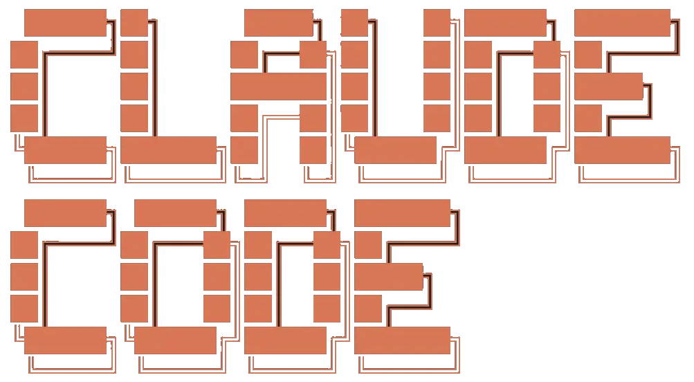

✻ Claude Code in 2026
Thushan Fernando
July 2025 → March 2026
ultrathink keyword in prompt
/effort low | medium | high
Claude Code no longer needs Node.js.
# or migrate from npm: $ claude install $ npm uninstall -g @anthropic-ai/claude-code
A middle ground between approving everything and YOLO mode.
# or Shift+Tab to cycle: # Ask → Auto Edits → Auto → Plan
Sonnet 4.6 or Opus 4.6 only, research-preview still.
Cron-like recurring tasks within Claude Code.
Disable mid-session: CLAUDE_CODE_DISABLE_CRON=1
Tell Claude how hard to think about your request.
low for quick fixes and simple questionsmedium for everyday coding taskshigh for architecture decisions, moderate debuggingmax for ambitious large work, complex debuggingauto let claude decide (default)Effort set to high ● Extended thinking enabled for complex tasks.
Replaces the old ultrathink hack.
Voice mode active. Hold Space to speak.
Define specialised agents in .claude/agents/
--- model: sonnet effort: high tools: [bash, read, write, Task(subagent)] --- You are a senior test engineer. Your job is to: - Write comprehensive unit & integration tests - Ensure edge cases and error paths are covered - Run `go test ./...` after every change - Never modify production code, only test files
Invoke with claude --agent test-engineer
Event-driven automation in your workflow.
PreToolUse / PostToolUse for lint and formatSessionStart to prime context"PostToolUse": [{
"matcher": "Write",
"command": "npx prettier --write $TOOL_INPUT_FILE"
}]
Also: TaskCompleted, TeammateIdle, HTTP hooks
Reusable instruction sets you invoke as slash commands.
.claude/skills/ with a SKILL.md file/skill-name) or auto-triggered by context--- name: fix-issue description: Fix a GitHub issue by number user-invocable: true argument-hint: [issue-number] --- 1. Read the issue with `gh issue view $ARGUMENTS` 2. Reproduce the bug with a failing test 3. Fix the code, ensure tests pass 4. Commit with "fix: closes #$ARGUMENTS"
Usage: /fix-issue 42
Bundles of skills, agents, hooks, and MCP servers you can share.
/plugin install github@officialInstalled commit-commands (3 skills, 1 hook) /commit, /pr, /changelog
Skills are the instructions. Plugins are how you distribute them.
# Symbol-level code understanding (30+ languages) > /plugin install serena # Persistent cross-session memory (github.com/thedotmack/claude-mem) > /plugin marketplace add thedotmack/claude-mem > /plugin install claude-mem # Live, version-specific docs in your prompts > /plugin install context7 # Browser control for frontend testing > /plugin install playwright
Ask a quick question without derailing your main task.
Summarise your conversation to free up context space.
Get a detailed code review of a pull request.
Review your recent changes for quality, then fix them.
Reviewing 4 changed files for reuse & quality...
Plan large-scale changes, then execute across isolated worktrees.
A worktree is a second working copy of your repo, on a different branch, sharing the same .git history.
# two directories, same repo, different branches # claude -w does this for you automatically
Start Claude in an isolated git worktree.
Claude Code handles the AI work. These handle everything around it.
# Navigate & merge worktrees without raw git commands $ cargo install worktrunk # github.com/max-sixty/worktrunk # Auto-activate correct tool versions per worktree $ curl https://mise.run | sh # github.com/jdx/mise # Track token usage and costs across sessions $ bunx ccusage # github.com/ryoppippi/ccusage # Native macOS terminal for managing AI agent sessions $ brew tap manaflow-ai/cmux && brew install --cask cmux # github.com/manaflow-ai/cmux # Watch agent teams work across panes (or use cmux above) $ tmux # built-in to most systems
Claude has several layers of memory. Each serves a different purpose.
~/.claude/projects/<project>/memory//compact to reclaim space)Built-in auto-memory is local-only and capped at 200 lines in the index. For heavier needs, Serena adds symbol-level code memory and Claude-Mem adds persistent cross-session recall with compression.
Claude remembers things across sessions automatically.
/memory3 memories stored: user_role.md - senior Go engineer feedback_testing.md - always use table-driven tests project_auth.md - auth rewrite for compliance
Copy your conversation to try a different approach.
Forked session. Original preserved as "auth-refactor".
Roll back conversation and code changes together.
Select a checkpoint to rewind to: [1] Before "refactor auth middleware" [2] Before "add error handling"
Give your sessions meaningful names for easy lookup.
claude -n "auth-refactor"claude --resume auth-refactorSession renamed to "api-v2-migration"
Minimal Claude for CI/CD pipelines and scripts.
-p for non-interactive useStart a session with full context from a GitHub PR.
--resume for ongoing PR workLet's see it in action
Thanks for listening!